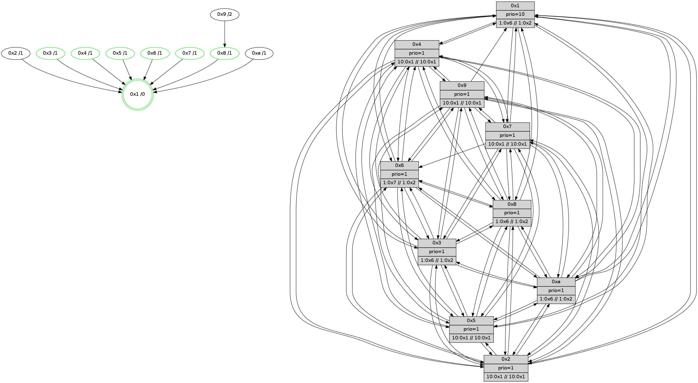

>> << IDX [start] -100 -25 -5 +0 +5 +25 +100 [610.441986084]
 Previous packets
605.005054 beacon09(faad) #0 coord=01,02,03,04,05,06,07,0a,09,08 cycle=688.0ms assoc 64 99 7e
605.015054 beacon08(faad) #0 coord=01,02,03,04,05,06,07,0a,09,08 cycle=688.0ms assoc 64 e3 33
605.026296 [STC(2)->1 #0.38 to-color d=1]
605.027559 [Hello(3): seq=389 sym=1,7,6,2,4,8,9,10,5 sysInfo=coloring-mode-on,ColoringModeIndicationCalled stat=1:5,8,10,0/7:14,12,10,3/6:6,15,9,5/2:11,6,11,6/4:9,3,11,4/8:8,1,7,0/9:15,5,14,5/10:10,5,8,3/5:12,8,11,5]
605.030571 [Hello(9): seq=332 sym=5,2,3,4,7,6,8,10,1 sysInfo=hasWarning stat=5:7,8,9,6/2:12,6,14,4/3:9,8,9,4/4:11,3,11,4/7:14,8,15,2/6:7,15,12,4/8:3,2,0,0/10:5,8,11,5/1:12,3,8,0]
605.034387 [Hello(4): seq=389 sym=5,7,6,2,3,9,8,10,1 sysInfo= stat=5:11,15,10,6/7:5,15,14,2/6:9,5,14,5/2:2,7,10,5/3:0,9,4,2/9:0,13,9,3/8:7,6,14,5/10:13,0,12,4/1:1,4,9,0]
605.037358 [Hello(8): seq=332 sym=5,2,3,4,7,6,9,10,1 sysInfo=coloring-mode-on,ColoringModeIndicationCalled stat=5:7,11,10,5/2:6,14,2,0/3:0,1,11,6/4:6,5,13,5/7:11,8,15,4/6:5,7,12,5/9:15,4,14,4/10:9,13,9,5/1:12,6,9,0]
605.042104 [STC(8)->1 #0.38 tree-change,inconsistent-stability,stable,to-color d=1]
605.044763 [Hello(10): seq=321 sym=6,2,3,8,9,5,7,4,1 sysInfo= stat=6:4,5,0,0/2:4,14,3,0/3:1,15,3,1/8:4,0,12,4/9:1,5,9,3/5:5,8,8,5/7:15,7,11,2/4:15,6,8,6/1:2,1,7,0]
605.053419 [STC(5)->1 #0.38 tree-change,inconsistent-stability,stable,to-color d=1]
605.058416 [STC(10)->1 #0.38 to-color d=1]
----------------------------------------------------------------------
605.713196 beacon01(faad) #0 coord=01,02,03,04,05,06,07,0a,09,08 cycle=688.0ms assoc
-- color-indic=1 64 b2 ed
605.723180 beacon02(faad) #0 coord=01,02,03,04,05,06,07,0a,09,08 cycle=688.0ms assoc 64 21 dc
605.733179 beacon03(faad) #0 coord=01,02,03,04,05,06,07,0a,09,08 cycle=688.0ms assoc 64 5b 91
605.743178 beacon04(faad) #0 coord=01,02,03,04,05,06,07,0a,09,08 cycle=688.0ms assoc 64 2c 7b
605.753179 beacon05(faad) #0 coord=01,02,03,04,05,06,07,0a,09,08 cycle=688.0ms assoc 64 56 36
605.763178 beacon06(faad) #0 coord=01,02,03,04,05,06,07,0a,09,08 cycle=688.0ms assoc 64 d8 e1
605.773181 beacon07(faad) #0 coord=01,02,03,04,05,06,07,0a,09,08 cycle=688.0ms assoc 64 a2 ac
605.783185 beacon0a(faad) #0 coord=01,02,03,04,05,06,07,0a,09,08 cycle=688.0ms assoc 64 d3 a7
605.793185 beacon09(faad) #0 coord=01,02,03,04,05,06,07,0a,09,08 cycle=688.0ms assoc 64 5d 70
605.803185 beacon08(faad) #0 coord=01,02,03,04,05,06,07,0a,09,08 cycle=688.0ms assoc 64 27 3d
605.814119 [STC(9)->8-.->1 #0.38 to-color d=2]
605.816367 [Hello(1): seq=298 sym=4,2,9,5,10,3,8,6,7 sysInfo=coloring-mode-on,ColoringModeRequestCalled stat=4:3,14,1,6/2:3,8,1,6/9:13,2,5,6/5:12,8,2,7/10:11,13,3,5/3:2,4,7,8/8:7,14,7,5/6:13,10,4,4/7:4,1,6,7]
605.819093 [Hello(7): seq=389 sym=2,3,5,6,4,8,9,10,1 sysInfo= stat=2:0,9,1,7/3:12,2,0,7/5:14,2,14,8/6:2,3,0,0/4:0,11,15,5/8:11,7,1,3/9:6,13,0,7/10:15,3,0,5/1:10,10,7,0]
605.821787 [Color(8) seq=69 @0:0 prio=1 >1.@6,1.@7,1.@9,1.@a >>1.@2,1.@3,1.@4]
605.823833 [Color(5) seq=53 @0:0 prio=1 >10.@1,1.@4,1.@6,1.@7 >>10.@1,1.@2,1.@3]
605.829729 [Color(6) seq=69 @0:0 prio=1 >1.@7,1.@8,1.@9,1.@a >>1.@2,1.@3,1.@4]
605.832479 [Color(7) seq=57 @0:0 prio=1 >10.@1,1.@4,1.@6,1.@8 >>10.@1,1.@2,1.@3]
605.834600 [Hello(2): seq=386 sym=4,5,7,6,3,9,8,10,1 sysInfo=hasWarning stat=4:15,12,12,2/5:10,13,9,4/7:3,15,14,3/6:8,6,14,4/3:7,10,6,1/9:2,5,9,1/8:10,15,7,2/10:3,1,9,3/1:0,0,1,0]
----------------------------------------------------------------------
606.501330 beacon01(faad) #0 coord=01,02,03,04,05,06,07,0a,09,08 cycle=688.0ms assoc
-- color-indic=1 64 0e e8
606.511313 beacon02(faad) #0 coord=01,02,03,04,05,06,07,0a,09,08 cycle=688.0ms assoc 64 9d d9
606.521313 beacon03(faad) #0 coord=01,02,03,04,05,06,07,0a,09,08 cycle=688.0ms assoc 64 e7 94
606.531312 beacon04(faad) #0 coord=01,02,03,04,05,06,07,0a,09,08 cycle=688.0ms assoc 64 90 7e
606.541313 beacon05(faad) #0 coord=01,02,03,04,05,06,07,0a,09,08 cycle=688.0ms assoc 64 ea 33
606.551313 beacon06(faad) #0 coord=01,02,03,04,05,06,07,0a,09,08 cycle=688.0ms assoc 64 64 e4
606.561312 beacon07(faad) #0 coord=01,02,03,04,05,06,07,0a,09,08 cycle=688.0ms assoc 64 1e a9
606.571319 beacon0a(faad) #0 coord=01,02,03,04,05,06,07,0a,09,08 cycle=688.0ms assoc 64 6f a2
606.581319 beacon09(faad) #0 coord=01,02,03,04,05,06,07,0a,09,08 cycle=688.0ms assoc 64 e1 75
606.591319 beacon08(faad) #0 coord=01,02,03,04,05,06,07,0a,09,08 cycle=688.0ms assoc 64 9b 38
606.602866 [Hello(3): seq=390 sym=1,7,6,2,4,8,9,10,5 sysInfo=coloring-mode-on,ColoringModeIndicationCalled stat=1:6,9,10,0/7:14,13,10,3/6:6,0,9,5/2:12,6,11,6/4:10,3,11,4/8:9,1,8,0/9:15,5,15,5/10:11,5,9,3/5:13,8,12,5]
606.605320 [Hello(10): seq=322 sym=6,2,3,8,9,5,7,4,1 sysInfo= stat=6:5,6,0,0/2:5,14,3,0/3:1,15,3,1/8:4,1,12,4/9:1,5,10,3/5:5,9,8,5/7:0,8,11,2/4:15,6,8,6/1:3,1,7,0]
606.608352 [Hello(4): seq=390 sym=5,7,6,2,3,9,8,10,1 sysInfo= stat=5:11,0,11,6/7:6,0,14,2/6:10,6,14,5/2:3,7,10,5/3:0,9,4,2/9:0,13,10,3/8:7,7,14,5/10:13,0,13,4/1:2,4,9,0]
606.612469 [Hello(8): seq=333 sym=5,2,3,4,7,6,9,10,1 sysInfo=coloring-mode-on,ColoringModeIndicationCalled stat=5:8,12,11,5/2:7,14,2,0/3:0,1,11,6/4:6,5,13,5/7:11,9,15,4/6:6,8,12,5/9:15,4,15,4/10:10,13,10,5/1:13,6,9,0]
606.616646 [Hello(9): seq=333 sym=5,2,3,4,7,6,8,10,1 sysInfo=hasWarning stat=5:8,9,10,6/2:13,6,14,4/3:9,8,9,4/4:12,3,11,4/7:15,9,15,2/6:7,0,12,4/8:4,3,1,0/10:6,8,12,5/1:13,3,8,0]
606.620738 [Hello(5): seq=390 sym=7,6,4,3,1,9,8,10,2 sysInfo= stat=7:14,7,1,3/6:2,5,0,4/4:9,5,10,3/3:5,13,7,2/1:6,8,7,0/9:6,9,12,3/8:7,10,8,3/10:5,15,13,4/2:15,12,11,3]
606.624185 [TreeStatus(8)-.->1 #0.38 tree-change,inconsistent-stability,stable child=1]
606.626141 [Color(1) seq=70 @0:0 prio=10 >1.@6,1.@7,1.@8,1.@9 >>1.@2,1.@3,1.@4]
----------------------------------------------------------------------
607.289460 beacon01(faad) #0 coord=01,02,03,04,05,06,07,0a,09,08 cycle=688.0ms assoc
-- color-indic=1 64 3a f0
607.299444 beacon02(faad) #0 coord=01,02,03,04,05,06,07,0a,09,08 cycle=688.0ms assoc 64 a9 c1
607.309442 beacon03(faad) #0 coord=01,02,03,04,05,06,07,0a,09,08 cycle=688.0ms assoc 64 d3 8c
607.319443 beacon04(faad) #0 coord=01,02,03,04,05,06,07,0a,09,08 cycle=688.0ms assoc 64 a4 66
607.329444 beacon05(faad) #0 coord=01,02,03,04,05,06,07,0a,09,08 cycle=688.0ms assoc 64 de 2b
607.339444 beacon06(faad) #0 coord=01,02,03,04,05,06,07,0a,09,08 cycle=688.0ms assoc 64 50 fc
607.349444 beacon07(faad) #0 coord=01,02,03,04,05,06,07,0a,09,08 cycle=688.0ms assoc 64 2a b1
607.359447 beacon0a(faad) #0 coord=01,02,03,04,05,06,07,0a,09,08 cycle=688.0ms assoc 64 5b ba
607.369447 beacon09(faad) #0 coord=01,02,03,04,05,06,07,0a,09,08 cycle=688.0ms assoc 64 d5 6d
607.379450 beacon08(faad) #0 coord=01,02,03,04,05,06,07,0a,09,08 cycle=688.0ms assoc 64 af 20
607.390373 [TreeStatus(4)-.->1 #0.38 tree-change,inconsistent-stability child=1]
607.393286 [Hello(2): seq=387 sym=4,5,7,6,3,9,8,10,1 sysInfo=hasWarning stat=4:0,12,12,2/5:11,13,9,4/7:3,15,14,3/6:8,6,14,4/3:8,10,6,1/9:3,5,9,1/8:11,15,7,3/10:4,1,9,3/1:0,1,1,0]
607.395713 [Color(3) seq=70 @0:0 prio=1 >1.@6,1.@7,1.@8,1.@9 >>1.@2,1.@3,1.@4]
607.398386 [Hello(7): seq=390 sym=2,3,5,6,4,8,9,10,1 sysInfo= stat=2:1,9,1,7/3:13,2,0,7/5:15,2,14,8/6:2,3,0,0/4:1,11,15,5/8:12,7,1,4/9:7,13,1,7/10:0,3,0,5/1:11,11,7,0]
607.402149 [Color(7) seq=58 @0:0 prio=1 >10.@1,1.@4,1.@6,1.@8 >>10.@1,1.@2,1.@3]
607.404667 [TreeStatus(10)-.->1 #0.38 tree-change,inconsistent-stability child=1]
607.406516 [Hello(6): seq=390 sym=2,3,5,4,9,8,10,1 sysInfo=coloring-mode-on,ColoringModeIndicationCalled stat=2:11,15,3,4/3:2,4,15,5/5:3,1,14,7/4:14,2,14,5/9:13,2,1,6/8:3,15,14,5/10:5,5,2,5/1:11,15,5,0]
607.408841 [TreeStatus(2)-.->1 #0.38 tree-change,inconsistent-stability child=1]
607.410848 [Color(8) seq=70 @0:0 prio=1 >1.@6,1.@7,1.@9,1.@a >>1.@2,1.@3,1.@4]
607.416369 [Color(6) seq=70 @0:0 prio=1 >1.@7,1.@8,1.@9,1.@a >>1.@2,1.@3,1.@4]
607.418793 [Color(5) seq=54 @0:0 prio=1 >10.@1,1.@4,1.@6,1.@7 >>10.@1,1.@2,1.@3]
----------------------------------------------------------------------
608.077592 beacon01(faad) #0 coord=01,02,03,04,05,06,07,0a,09,08 cycle=688.0ms assoc
-- color-indic=1 64 86 f5
608.087574 beacon02(faad) #0 coord=01,02,03,04,05,06,07,0a,09,08 cycle=688.0ms assoc 64 15 c4
608.097575 beacon03(faad) #0 coord=01,02,03,04,05,06,07,0a,09,08 cycle=688.0ms assoc 64 6f 89
608.107574 beacon04(faad) #0 coord=01,02,03,04,05,06,07,0a,09,08 cycle=688.0ms assoc 64 18 63
608.117574 beacon05(faad) #0 coord=01,02,03,04,05,06,07,0a,09,08 cycle=688.0ms assoc 64 62 2e
608.127574 beacon06(faad) #0 coord=01,02,03,04,05,06,07,0a,09,08 cycle=688.0ms assoc 64 ec f9
608.137574 beacon07(faad) #0 coord=01,02,03,04,05,06,07,0a,09,08 cycle=688.0ms assoc 64 96 b4
608.147581 beacon0a(faad) #0 coord=01,02,03,04,05,06,07,0a,09,08 cycle=688.0ms assoc 64 e7 bf
608.157580 beacon09(faad) #0 coord=01,02,03,04,05,06,07,0a,09,08 cycle=688.0ms assoc 64 69 68
608.167580 beacon08(faad) #0 coord=01,02,03,04,05,06,07,0a,09,08 cycle=688.0ms assoc 64 13 25
608.178768 [Hello(4): seq=391 sym=5,7,6,2,3,9,8,10,1 sysInfo= stat=5:12,1,11,6/7:7,1,14,2/6:11,7,14,5/2:4,7,10,6/3:0,9,4,2/9:1,13,10,3/8:8,8,14,6/10:13,0,13,5/1:2,5,9,0]
608.182414 [Hello(9): seq=334 sym=5,2,3,4,7,6,8,10,1 sysInfo=hasWarning stat=5:9,10,10,6/2:14,6,14,5/3:9,8,9,4/4:12,3,11,5/7:0,10,15,2/6:8,1,12,4/8:4,4,1,1/10:6,8,12,6/1:13,4,8,0]
608.186743 [Hello(8): seq=334 sym=5,2,3,4,7,6,9,10,1 sysInfo=coloring-mode-on,ColoringModeIndicationCalled stat=5:8,13,11,5/2:7,14,2,0/3:0,1,11,6/4:6,5,13,5/7:11,9,15,4/6:6,9,12,5/9:15,4,15,4/10:10,13,10,5/1:13,7,9,0]
608.189319 [Hello(3): seq=391 sym=1,7,6,2,4,8,9,10,5 sysInfo=coloring-mode-on,ColoringModeIndicationCalled stat=1:6,10,10,0/7:15,14,10,3/6:7,1,9,5/2:12,6,11,7/4:11,3,11,4/8:10,2,8,1/9:0,5,15,5/10:12,5,9,4/5:14,9,12,5]
608.192666 [Color(1) seq=71 @0:0 prio=10 >1.@6,1.@7,1.@8,1.@9 >>1.@2,1.@3,1.@4]
608.196164 PARSE ERROR************************
Traceback (most recent call last):
File "PacketAnalysis.py", line 167, in showOperaPacket
structPacket = OperaPacketParse.parsePacket(rawPacket)
File "../../pkg-python/HipSens/Core/OperaPacketParse.py", line 461, in parsePacket
return parseHelloMessage(data)
File "../../pkg-python/HipSens/Core/OperaPacketParse.py", line 127, in parseHelloMessage
assert struct.calcsize("H")*len(neighAddrList) == len(linkList)
AssertionError
48 34 05 00 01 87 00 02 02 12 07 00 06 00 04 00 03 00 01 00 09 00 08 00 0a 00 02 00 53 04 00 00 00 00 4c 12 31 7e 40 52 4a 59 27 d5 07 96 3c 96 48 a7 4d f5 3b cf 4c 1c
608.199925 [Hello(10): seq=323 sym=6,2,3,8,9,5,7,4,1 sysInfo= stat=6:6,7,0,0/2:5,14,3,1/3:1,15,3,1/8:5,2,12,5/9:2,5,10,3/5:6,10,8,5/7:0,8,11,2/4:0,6,8,6/1:3,2,7,0]
----------------------------------------------------------------------
608.865722 beacon01(faad) #0 coord=01,02,03,04,05,06,07,0a,09,08 cycle=688.0ms assoc
-- color-indic=1 64 42 fb
608.875704 beacon02(faad) #0 coord=01,02,03,04,05,06,07,0a,09,08 cycle=688.0ms assoc 64 d1 ca
608.885706 beacon03(faad) #0 coord=01,02,03,04,05,06,07,0a,09,08 cycle=688.0ms assoc 64 ab 87
608.895706 beacon04(faad) #0 coord=01,02,03,04,05,06,07,0a,09,08 cycle=688.0ms assoc 64 dc 6d
608.905705 beacon05(faad) #0 coord=01,02,03,04,05,06,07,0a,09,08 cycle=688.0ms assoc 64 a6 20
608.915705 beacon06(faad) #0 coord=01,02,03,04,05,06,07,0a,09,08 cycle=688.0ms assoc 64 28 f7
608.925706 beacon07(faad) #0 coord=01,02,03,04,05,06,07,0a,09,08 cycle=688.0ms assoc 64 52 ba
608.935709 beacon0a(faad) #0 coord=01,02,03,04,05,06,07,0a,09,08 cycle=688.0ms assoc 64 23 b1
608.945711 beacon09(faad) #0 coord=01,02,03,04,05,06,07,0a,09,08 cycle=688.0ms assoc 64 ad 66
608.955710 beacon08(faad) #0 coord=01,02,03,04,05,06,07,0a,09,08 cycle=688.0ms assoc 64 d7 2b
608.967834 [Hello(2): seq=388 sym=4,5,7,6,3,9,8,10,1 sysInfo=hasWarning stat=4:1,12,12,3/5:12,14,9,4/7:3,15,14,3/6:8,7,14,4/3:9,11,6,1/9:4,5,9,1/8:11,0,7,3/10:5,1,9,3/1:0,2,1,0]
608.975489 [Color(6) seq=71 @0:0 prio=1 >1.@7,1.@8,1.@9,1.@a >>1.@2,1.@3,1.@4]
608.978500 [Color(5) seq=55 @0:0 prio=1 >10.@1,1.@4,1.@6,1.@7 >>10.@1,1.@2,1.@3]
608.981497 [Hello(1): seq=300 sym=4,2,5,10,3,8,6,7 sysInfo=coloring-mode-on,ColoringModeRequestCalled stat=4:4,14,1,6/2:5,8,1,7/5:13,10,2,7/10:12,13,3,6/3:3,5,7,8/8:7,0,7,5/6:14,12,4,4/7:6,3,6,7]
608.985499 [Color(8) seq=71 @0:0 prio=1 >1.@6,1.@7,1.@9,1.@a >>1.@2,1.@3,1.@4]
608.995356 [Color(7) seq=59 @0:0 prio=1 >10.@1,1.@4,1.@6,1.@8 >>10.@1,1.@2,1.@3]
----------------------------------------------------------------------
609.653855 beacon01(faad) #0 coord=01,02,03,04,05,06,07,0a,09,08 cycle=688.0ms assoc
-- color-indic=1 64 fe fe
609.663837 beacon02(faad) #0 coord=01,02,03,04,05,06,07,0a,09,08 cycle=688.0ms assoc 64 6d cf
609.673836 beacon03(faad) #0 coord=01,02,03,04,05,06,07,0a,09,08 cycle=688.0ms assoc 64 17 82
609.683839 beacon04(faad) #0 coord=01,02,03,04,05,06,07,0a,09,08 cycle=688.0ms assoc 64 60 68
609.693838 beacon05(faad) #0 coord=01,02,03,04,05,06,07,0a,09,08 cycle=688.0ms assoc 64 1a 25
609.703837 beacon06(faad) #0 coord=01,02,03,04,05,06,07,0a,09,08 cycle=688.0ms assoc 64 94 f2
609.713838 beacon07(faad) #0 coord=01,02,03,04,05,06,07,0a,09,08 cycle=688.0ms assoc 64 ee bf
609.723844 beacon0a(faad) #0 coord=01,02,03,04,05,06,07,0a,09,08 cycle=688.0ms assoc 64 9f b4
609.733842 beacon09(faad) #0 coord=01,02,03,04,05,06,07,0a,09,08 cycle=688.0ms assoc 64 11 63
609.743844 beacon08(faad) #0 coord=01,02,03,04,05,06,07,0a,09,08 cycle=688.0ms assoc 64 6b 2e
609.755053 [Hello(5): seq=392 sym=7,6,4,3,1,9,8,10,2 sysInfo= stat=7:14,8,1,3/6:2,5,0,4/4:9,5,10,4/3:5,13,7,2/1:7,9,7,0/9:6,9,12,3/8:7,11,8,4/10:6,15,13,4/2:0,12,11,3]
609.757902 [Hello(3): seq=392 sym=1,7,6,2,4,8,9,10,5 sysInfo=coloring-mode-on,ColoringModeIndicationCalled stat=1:7,11,10,0/7:15,15,10,3/6:7,2,9,5/2:13,6,11,7/4:11,3,11,4/8:10,3,8,1/9:0,5,15,5/10:13,5,9,4/5:15,10,12,5]
609.761226 [Hello(8): seq=335 sym=5,2,3,4,7,6,9,10,1 sysInfo=coloring-mode-on,ColoringModeIndicationCalled stat=5:9,13,11,5/2:8,14,2,0/3:1,1,11,6/4:6,5,13,5/7:11,10,15,4/6:6,9,12,5/9:15,4,15,4/10:11,13,10,5/1:13,8,9,0]
609.765209 [Hello(9): seq=335 sym=5,2,3,4,7,6,8,10,1 sysInfo=hasWarning stat=5:10,11,10,6/2:15,6,14,5/3:10,8,9,4/4:12,3,11,5/7:0,11,15,2/6:8,2,12,4/8:5,5,1,1/10:7,8,12,6/1:14,5,8,0]
609.768695 [Hello(4): seq=392 sym=5,7,6,2,3,9,8,10,1 sysInfo= stat=5:13,2,11,6/7:7,2,14,2/6:12,8,14,5/2:5,7,10,6/3:1,9,4,2/9:2,13,10,3/8:9,9,14,6/10:14,0,13,5/1:3,6,9,0]
609.773659 [Hello(10): seq=324 sym=6,2,3,8,9,5,7,4,1 sysInfo= stat=6:6,8,0,0/2:6,14,3,1/3:1,15,3,1/8:5,3,12,5/9:2,5,10,3/5:6,11,8,5/7:0,9,11,2/4:0,6,8,6/1:4,2,7,0]
609.779290 [Color(1) seq=72 @0:0 prio=10 >1.@6,1.@7,1.@8,1.@9 >>1.@2,1.@3,1.@4]